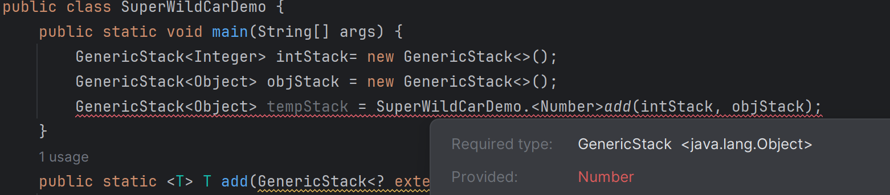
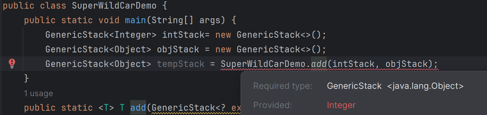

5 泛型（二）——通配泛型
协变性¶
泛型不具备协变性¶
在介绍通配泛型之前，先来看一下下面的例子。我们定义了一个泛型栈：
max，用来求一个GenericStack容器中元素的最大值。如下面的代码所示：
main函数，意图在于借助WildCardNeedDemo.max方法，找出intStack中的最大值3。但是实际运行时，程序报错，说GenericStack<Integer>无法转换为GenericStack<Number>类型。这是因为泛型不具备协变性。所谓的协变性在泛型中是指：有泛型类
Generic<T>如果B是A的子类，那么Generic<B>也是Generic<A>的子类。
数组具备协变性¶
协变性在数组中是指：如果类A是类B的父类，那么A[]就是B[]的父类。数组具有协变性。
数组的协变性是 Java 开发者和使用者所公认的一个瑕疵，因为它会导致编译通过的地方运行时出错的问题。比如下面这个例子：
通配泛型¶
但是，规定泛型不具备协变性，又会带来很多不方便。为了让泛型具有更好的性能， Java 开发者设计出了通配泛型。通配泛型具有三种形式：上界通配、下界通配和非受限通配。
上界通配¶
形式为<? extends T>，表示只要是T的子类即可，T定义了类型的上限（父类为上，子类为下）。
在上面WildCarNeedDemo中，只需要将max的形参列表改为(GenericStack<? extends Number> stack)就能够正常运行。因为Integer是Number的子类，所以GenericStack<? extends Number>是GenericStack<Integer>的父类。
以上界通配符声明的泛型容器是不能添加除null之外的元素的。如：
ArrayList<Apple>，它只认list的声明类型ArrayList<? extends Fruit>。编译器无法知道list指向的容器的元素的类型下界，自然无法判断加进来的元素是否与容器相容。所以编译器就干脆什么不让加进来。然而，不管
list究竟指向什么类型的容器，容器的元素一定是Fruit的子类。所以可以从容器里取元素，并用Fruit类型的引用变量指向它。所以，上界通配的泛型容器相当于一个只读不存(注意不能存但是能删，所以是可写的)的容器。只读不写的特性，让上界通配泛型容器具有特殊的意义：作为方法参数。例如，定义一个方法
handle(ArrayList<? extends Fruit> list)，方法中可以对传进来的list中的元素（引用为Fruit）进行处理，但是不能添加新的元素。
非受限通配的形式为
<?>，它是一种特殊的上界通配，等价于<? extends Object>。因此非受限通配的所有性质都可以参照上界通配。
下界通配¶
形式为<? super T>，表示只要是T的父类即可，T定义了类型的下限。
以下界通配符声明的泛型容器只能添加T和T的子类对象。
list指向的容器的元素的类型下界是Fruit，看不到运行时类型ArrayList<Object>。所以，编译器知道加入Fruit和Fruit子类对象时安全的，至于Fruit的父类就无法保证了。从这种容器中取元素都解释为
Object类，也可以强制类型转换为其他类，但是调用方法就行不通了，因为不知道取出来的对象是否有我们调用的方法。
PECS 原则¶
Producer Extends，Consumer Super.
如果需要一个只读泛型类，用来Produce T，那么用 ? extends T。如果需要一个只写泛型类，用来Consume T，那么用 ? super T。如果一个泛型容器需要同时读取和写入，那么就不能用通配符。
实际上，
<? extends T>也可以写（删除元素），所以说它只读是不准确的，意思是想表达不能往里面加东西。<? super T>也可以读（作为Object读出来），说它只写也是不准确的，但是想表达的意思是：从里面取出来的对象，也不知道有没有我们想要的数据成员或方法，所以一般不读。
泛型容器中元素的转移——PECS的一个应用实例¶
泛型类GenericStack<E>的定义仍然沿用上文的定义。下面的代码实现了GenericStack的两个实例泛型：
add，通过调用add(strStack,objStack)，将strStack中的元素全部加入objStack中。可以定义下面的方法：
add(strStack,objStack)时，编译器自动推断T应该是String，并推断这条语句运行时不会出错。也可以显式地使用<String>add(strStack,objStack)，但是不建议，一旦编译器推断出的实际类型和你给出的实际类型不一致，就会报错。当然，
add的函数头还可以是：
add(strStack,objStack)，编译器推断出T应是Object。
Java泛型变量推论机制浅讨论¶
上面的这个实例中，都是编译器推断出T时什么类型。这是因为我们在形参列表中使用了普通泛型<T>，编译器直接根据传入对象的引用类型来推断。
形参列表中的普通泛型给了编译器可乘之机，编译器直接通过普通泛型得到T的实际类型，然后依次检查形参列表中其他的泛型是否合法。那我如果不给编译器可乘之机呢？比如下面这样：
T，虽然这个时候编译器只能得到T的一个范围。比如，对于add(strStack,objStack)语句，编译器能得到的信息是：String是T的子类，而Object是T的父类。显然这样的T是存在的，编译器就不会报错。那么编译器到底将T解释称什么呢？这种情况下，
T被解释为它所能够达到的下限。下面是解释： 栈还是上面定义的
GenericStack，现在我写下面一个入口类：

由于我们显示提供了T是Number，那么自然返回的stack1也被强制类型转化为Number类型了。现在我们不显式提供类型参数，看看会是怎么报错：

我们没有告诉编译器T应该是什么类型，但是编译器说这个add函数返回的是Interger类型的对象。这说明编译器自行推断出T是Integer。
这个例子中换成了心的泛型实例GenericStack<Integer>，是因为Object和Integer之间还有一个中间类Number。我想说的是，在不显式提供类型实参，且编译器根据传入对象无法确定类型形参的具体类型时，编译器会把类型形参解释为它能够到达的下限。不会解释为上限，更不会解释为其他的中间类型。
当然，如果编译器发现，根据你传入的对象推断出的T的范围是空集，那就直接报错。